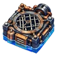

Водоворотный насос
SSR Область
Сработав на воде, утаскивает наземных и водных врагов в зоне 3×3 на дно — мгновенная победа. Боссу — большой урон. Заденет и тебя.
В чертежах была карта этих подземных вод
Обзор
| Gacha | Платная гача: со стадии 51 (Баннер 3, Баннер 4, Баннер 5, Баннер 6) |
|---|---|
| Trigger | Враг наступает на него |
| Диапазон | 3 x 3 квадрат |
| Targets | Земля,Водный |
| Использует | 1 |
| Размещение | Вода |
| Origin | Дизайн отца |
| Макс. уровень | 99 |
| Свойства | Срабатывает, когда героиня наступает на нее Также поражает героиню в радиусе действия |
Эффекты
- Мгновенное убийство: состояние не босс, сила против боссов 100
Изменения при повышении уровня
| Lv | Изменить |
|---|---|
| Lv50 | Эволюция
|
Значения по уровням
Значения урона растут с уровнем (и с редкостью) по формуле роста игры; в таблице указаны реальные значения.
| Lv | Эффект | Диапазон | Использует |
|---|---|---|---|
| Lv1 |
| 3 x 3 квадрат | 1 |
| Lv50 |
| 5 x 5 квадрат | 1 |
| Lv99 |
| 5 x 5 квадрат | 1 |
Обновление
Уровни берутся из одного пула опыта, общего для ловушек и брони: переход с уровня L на L+1 стоит 5
| Lv | Итого EXP |
|---|---|
| Lv10 | 225 |
| Lv30 | 2175 |
| Lv50 | 6125 |
| Lv99 | 24255 |